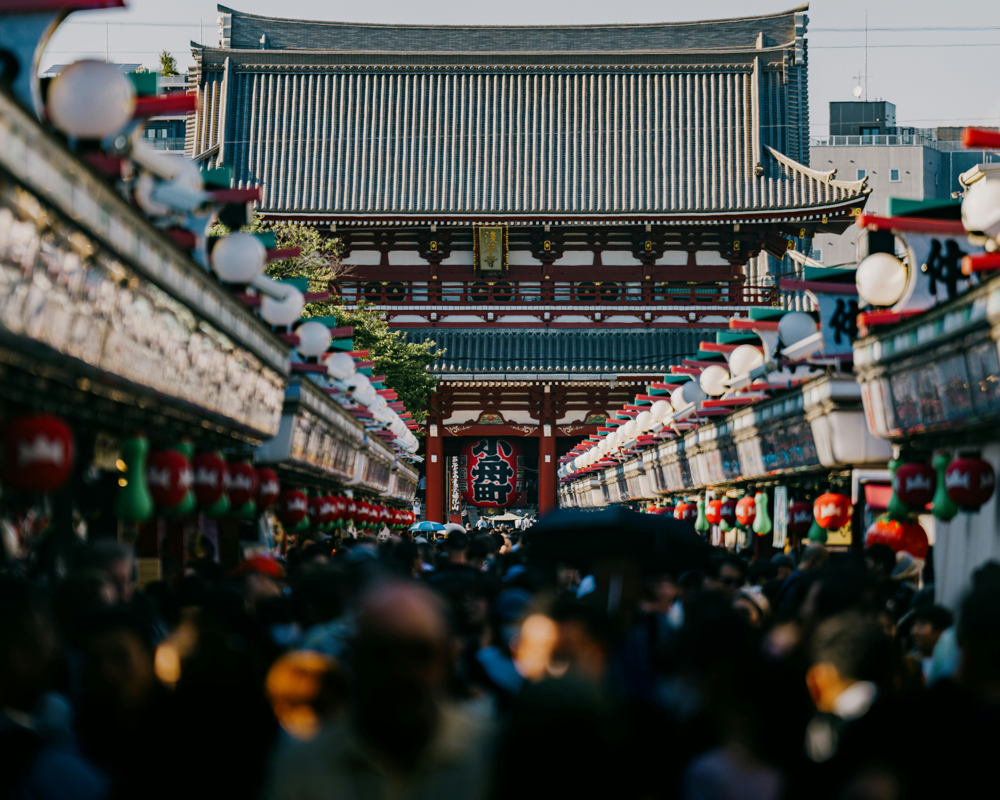
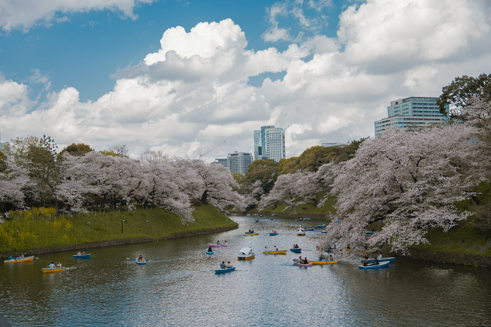

| TIPO | UBICACIÓN | DESCRIPCIÓN |
|---|---|---|
| Todas las páginas |
Todos los iconos utilizados son FREE de Font Awesome https://fontawesome.com/icons |
|
| portada |
TEXTOS de wikipedia |
|
, CC BY-SA 3.0 <https://creativecommons.org/licenses/by-sa/3.0>, via Wikimedia Commons") |
portada |
Wikimedia Atribución: "Tokyoship (Source:Lincun ), CC BY-SA 3.0 |
 |
portada |
Wikimedia Atribución: "derivative work:w:User:ASDFGHof 包括自治体区画図 13000.svg: ja:User:Lincun, CC BY-SA 3.0 |
 |
categoria |
Wikimedia Atribución: "Daniel L. Lu (user:dllu), CC BY-SA 4.0 <https://creativecommons.org/licenses/by-sa/4.0>, via Wikimedia Commons" Wikimedia - Fotografía |
, CC BY-SA 2.0 <https://creativecommons.org/licenses/by-sa/2.0>, via Wikimedia Commons")
| categoria |
Wikimedia Atribución: "Benh LIEU SONG (Flickr), CC BY-SA 2.0 <https://creativecommons.org/licenses/by-sa/2.0>, via Wikimedia Commons" Wikimedia - Fotografía |

| categoria |
Wikimedia Atribución: "Pierre Blaché from Paris, France, CC0, via Wikimedia Commons" Wikimedia - Fotografía |

| categoria |
Wikimedia Atribución: "Kakidai, CC BY-SA 3.0 <https://creativecommons.org/licenses/by-sa/3.0>, via Wikimedia Commons" Wikimedia - Fotografía |

| categoria |
Wikimedia Atribución: "Basile Morin, CC BY-SA 4.0 <https://creativecommons.org/licenses/by-sa/4.0>, via Wikimedia Commons" Wikimedia - Fotografía |

| categoria |
Wikimedia Atribución: "photoAC, Copyrighted free use, via Wikimedia Commons" Wikimedia - Fotografía |

| categoria |
Wikimedia Atribución: "Nesnad, CC BY 4.0 <https://creativecommons.org/licenses/by/4.0>, via Wikimedia Commons" Wikimedia - Fotografía |
 |
det1 |
Todas las fotos y vídeos en Pexels se pueden utilizar gratuitamente. No hace falta mencionar la fuente. No es obligatorio elogiar públicamente al fotógrafo o a Pexels, aunque es un lindo detalle. Fotografía de Ehsan Haque en Pexels Enlace |
|  | det1 |
Todas las fotos y vídeos en Pexels se pueden utilizar gratuitamente. No hace falta mencionar la fuente. No es obligatorio elogiar públicamente al fotógrafo o a Pexels, aunque es un lindo detalle. Fotografía de Satoshi Hirayama en Pexels Enlace |
| det1 |
Video de YouTube de Japatonic: La trampa de la comida auténtica de Japón Video de YouTube de Japatonic: La trampa de la comida auténtica de Japón |
|
|  | det1 |
Todas las fotos y vídeos en Pexels se pueden utilizar gratuitamente. No hace falta mencionar la fuente. No es obligatorio elogiar públicamente al fotógrafo o a Pexels, aunque es un lindo detalle. Fotografía de Maheshwaran Shanmugam en Pexels Enlace |
| det2 |
TEXTOS de wikipedia |
|
 |
det2 |
Todas las fotos y vídeos en Pexels se pueden utilizar gratuitamente. No hace falta mencionar la fuente. No es obligatorio elogiar públicamente al fotógrafo o a Pexels, aunque es un lindo detalle. Fotografía de William Warby en Pexels Enlace |
 |
det2 |
Todas las fotos y vídeos en Pexels se pueden utilizar gratuitamente. No hace falta mencionar la fuente. No es obligatorio elogiar públicamente al fotógrafo o a Pexels, aunque es un lindo detalle. Fotografía de Sachith Ravishka Kodikara en Pexels Enlace |
 |
det2 |
Todas las fotos y vídeos en Pexels se pueden utilizar gratuitamente. No hace falta mencionar la fuente. No es obligatorio elogiar públicamente al fotógrafo o a Pexels, aunque es un lindo detalle. Fotografía de Timo Volz en Pexels Enlace |
 |
det2 |
Licencia Unsplah: Todas las imágenes se pueden descargar y utilizar de forma gratuita. Fines comerciales y no comerciales. No se necesita permiso (¡aunque se agradece la atribución!). Fotografía de Vinicius en Unsplah Enlace |
| det2 |
Video de YouTube de Japatonic: Lo Bueno, lo Malo y lo Inesperado de Japón: Shibuya sin filtro Video de YouTube de Japatonic: Lo Bueno, lo Malo y lo Inesperado de Japón: Shibuya sin filtro |
|
 |
det2 |
Wikimedia Atribución: "Shinjiro, CC BY 3.0 <https://creativecommons.org/licenses/by/3.0>, via Wikimedia Commons" Wikimedia - Fotografía del Parque de Yoyogi |
 |
det2 |
Todas las fotos y vídeos en Pexels se pueden utilizar gratuitamente. No hace falta mencionar la fuente. No es obligatorio elogiar públicamente al fotógrafo o a Pexels, aunque es un lindo detalle. Fotografía de Rhys Abel en Pexels Enlace |